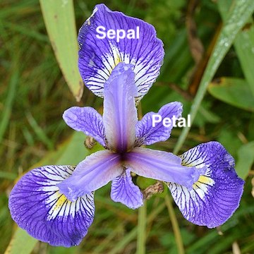

2.2.1 Data Consistency¶
In section 4 we saw how to load data of different types into pandas. In this section we’ll look at first steps you can perform to look at the data, understand what it contains, and a few common issues that may come up with data consistency like missing or mis-interpreted values.
Domain Knowledge¶
Before jumping into looking at and analysing the data you should check any information you’ve been given about it, so you know what to expect. In this section we’ll be using the Iris dataset, a well-known example dataset for machine learning available from the UCI Machine Learning repository (and well-known enough to have its own Wikipedia page!)
The Iris dataset was first published in 1936 by Ronald Fisher in the paper “The use of multiple measurements in taxonomic problems”. It includes measurements of the petal and sepal sizes (length and width) of three species of Iris flowers. The UCI repository page contains more information about the columns and data types we expect. To reiterate, it’s always important to check the documentation and associated literature first.
 |
|---|
Ryan Hodnett, “Northern Blue Flag (Iris versicolor)”, 2019. CC-BY-SA 4.0. Labels added. |
Having a First Look at the Data¶
The dataset is saved in data/Iris.csv and we can load it with pd.read_csv, as seen previously:
import pandas as pd
import numpy
df = pd.read_csv("data/Iris.csv")
Display the first few ten rows of the data:
df.head(10)
| Id | SepalLengthCm | SepalWidthCm | PetalLengthCm | PetalWidthCm | Species | |
|---|---|---|---|---|---|---|
| 0 | 25 | 4.8 | 3.4 | 1.9 | 0.2 | Iris-setosa |
| 1 | 24 | 5.1 | 3.3 | 1.7 | 0.5 | Iris-setosa |
| 2 | 139 | 6.0 | 3.0 | 4.8 | 1.8 | Iris-virginica |
| 3 | 88 | 6.3 | 2.3 | 4.4 | 1.3 | Iris-versicolor |
| 4 | 135 | 6.1 | 2.6 | 5.6 | 1.4 | Iris-virginica |
| 5 | 87 | 6.7 | 3.1 | 4.7 | 1.5 | Iris-versicolor |
| 6 | 89 | 5.6 | 3.0 | 4.1 | 1.3 | Iris-versicolor |
| 7 | 143 | 5.8 | 2.7 | 5.1 | 1.9 | Iris-virginica |
| 8 | 117 | 6.5 | 3.0 | 5.5 | 1.8 | Iris-virginica |
| 9 | 109 | 6.7 | 2.5 | 5.8 | 1.8 | Iris-virginica |
We could also look at the last few rows of the data with df.tail(), or a random sample of rows with df.sample().
To check the number of rows and columns we can use:
print(df.shape)
(157, 6)
Our data has 157 rows and 6 columns. It might also be useful to look at the column names (especially for larger datasets with many columns where they may not all be displayed by df.head()):
print(df.columns)
Index(['Id', 'SepalLengthCm', 'SepalWidthCm', 'PetalLengthCm', 'PetalWidthCm',
'Species'],
dtype='object')
A useful command that summarises much of this information is df.info():
df.info()
<class 'pandas.core.frame.DataFrame'>
RangeIndex: 157 entries, 0 to 156
Data columns (total 6 columns):
# Column Non-Null Count Dtype
--- ------ -------------- -----
0 Id 157 non-null int64
1 SepalLengthCm 157 non-null float64
2 SepalWidthCm 157 non-null object
3 PetalLengthCm 157 non-null float64
4 PetalWidthCm 155 non-null float64
5 Species 157 non-null object
dtypes: float64(3), int64(1), object(2)
memory usage: 7.5+ KB
This gives us the number of rows (entries) and columns at the top, and then a table with the name, number of non-null values, and data type of each column. Finally, it gives the amount of memory the data frame is using. Pandas can use a lot of memory, which may cause problems when analysing large datasets. The Scaling to large datasets page in the Pandas documentation gives pointers for what you can try in that case.
Null Values¶
The data frame info shows we have 157 “non-null” values in all the columns except PetalWidthCm, where there are 155. There are 157 rows in our data, so that means there are 2 “null” values in the PetalWidthCm column.
“Null values” is Pandas’ way of describing data that is missing. Under the hood, these are encoded as NumPy’s NaN (not a number) constant (see here), which has type float64 so numeric columns with NaN values still have a numeric type and can have numeric operations applied to them.
To find missing values in a column we can use the isnull() function:
is_missing = df["PetalWidthCm"].isnull()
print(is_missing)
0 False
1 False
2 False
3 False
4 False
...
152 False
153 False
154 False
155 False
156 False
Name: PetalWidthCm, Length: 157, dtype: bool
This returns a boolean series which is True if that row’s value is NaN, which can then be used to filter the data frame and show only the rows with missing data in the PetalWidthCm column:
df[is_missing]
| Id | SepalLengthCm | SepalWidthCm | PetalLengthCm | PetalWidthCm | Species | |
|---|---|---|---|---|---|---|
| 92 | 156 | 6.6 | 3.0 | 4.8 | NaN | Iris-versicolor |
| 145 | 155 | 5.0 | 3.9 | 1.5 | NaN | Iris-setosa |
There are many reasons data could be missing and how you choose to deal with them is an important part of any research project. We’ll revisit this later.
Unexpected Column Types¶
Looking at the first few rows of our data (the output of df.head() above) it looks like we expect the Id, SepalLengthCm, SepalWidthCm, PetalLengthCm and PetalWidthCm columns to have a numeric type. Comparing with the output of df.info() above most of them do, having a dtype (data type) of either int64 or float64.
However, the SepalWidthCm column has a dtype of object, which usually means the column is being treated as strings/text data. This will generally be because there is at least one row in the column that Pandas was not able to parse as a number. Common reasons this might happen include:
Data entry errors and typos, for example “23/15” instead of “23.15”.
Encoding of missing values: The
pd.read_csv()function checks for common string representations of missing values like “NA” or “NULL” and converts these tonumpy.nanwhen loading the data. But many different conventions for missing data exist, such as more verbose representations like “UNKNOWN”, and Pandas will load these as strings by default. This can be customised with thena_valuesparameter ofpd.read_csv().Additional metadata incorrectly loaded into the data frame, such as CSV files with headers and footers (as seen in the Data Sources Formats section previously).
To see what’s wrong with the SepalWidthCm column we can try to convert it to a numeric type with the pd.to_numeric function:
df["SepalWidthCm"] = pd.to_numeric(df["SepalWidthCm"])
---------------------------------------------------------------------------
ValueError Traceback (most recent call last)
/opt/hostedtoolcache/Python/3.9.8/x64/lib/python3.9/site-packages/pandas/_libs/lib.pyx in pandas._libs.lib.maybe_convert_numeric()
ValueError: Unable to parse string "3,1"
During handling of the above exception, another exception occurred:
ValueError Traceback (most recent call last)
/tmp/ipykernel_2007/1842675192.py in <module>
----> 1 df["SepalWidthCm"] = pd.to_numeric(df["SepalWidthCm"])
/opt/hostedtoolcache/Python/3.9.8/x64/lib/python3.9/site-packages/pandas/core/tools/numeric.py in to_numeric(arg, errors, downcast)
181 coerce_numeric = errors not in ("ignore", "raise")
182 try:
--> 183 values, _ = lib.maybe_convert_numeric(
184 values, set(), coerce_numeric=coerce_numeric
185 )
/opt/hostedtoolcache/Python/3.9.8/x64/lib/python3.9/site-packages/pandas/_libs/lib.pyx in pandas._libs.lib.maybe_convert_numeric()
ValueError: Unable to parse string "3,1" at position 51
The error above tells us Pandas has encountered a value “3,1”, which it doesn’t know how to convert into a number. It also says the problem is at index 51, which we can access ourselves to check the value directly:
df.loc[51, "SepalWidthCm"]
'3,1'
In this case it looks like a typo, the person entering the data probably meant to write 3.1, but we should check this first. There may be information in the data documentation, or you could ask the data provider. It’s possible that this should actually be treated as two measurements (3 and 1), for example.
Let’s say we’re confident it is a typo. We can fix it ourselves and then convert the column to a numeric type:
# set the incorrectly typed number to its intended value
df.loc[51, "SepalWidthCm"] = 3.1
# convert the column to a numeric type
df["SepalWidthCm"] = pd.to_numeric(df["SepalWidthCm"])
df.info()
<class 'pandas.core.frame.DataFrame'>
RangeIndex: 157 entries, 0 to 156
Data columns (total 6 columns):
# Column Non-Null Count Dtype
--- ------ -------------- -----
0 Id 157 non-null int64
1 SepalLengthCm 157 non-null float64
2 SepalWidthCm 157 non-null float64
3 PetalLengthCm 157 non-null float64
4 PetalWidthCm 155 non-null float64
5 Species 157 non-null object
dtypes: float64(4), int64(1), object(1)
memory usage: 7.5+ KB
The SepalWidthCm now has type float64 as we originally expected.
This was a simple example with just one strange value - we’ll see more approaches for handling and sanitising strings later.
Sanity Checking Values¶
Numeric Columns¶
The pandas describe() function gives summary statistics for the numeric columns in our data (the mean, standard deviation, minimum and maximum value, and quartiles for each column):
df.describe()
| Id | SepalLengthCm | SepalWidthCm | PetalLengthCm | PetalWidthCm | |
|---|---|---|---|---|---|
| count | 157.000000 | 157.000000 | 157.000000 | 157.000000 | 155.000000 |
| mean | 78.337580 | 5.180255 | 3.060510 | 3.988535 | 1.229032 |
| std | 45.078358 | 8.408104 | 0.430229 | 3.383007 | 0.820355 |
| min | 1.000000 | -99.000000 | 2.000000 | 1.000000 | 0.100000 |
| 25% | 40.000000 | 5.100000 | 2.800000 | 1.600000 | 0.300000 |
| 50% | 78.000000 | 5.800000 | 3.000000 | 4.400000 | 1.300000 |
| 75% | 117.000000 | 6.400000 | 3.300000 | 5.100000 | 1.800000 |
| max | 156.000000 | 7.900000 | 4.400000 | 40.000000 | 5.000000 |
Warning
Even though PetalWidthCm has missing (NaN) values, Pandas is able to compute statistics for that column. When calculating these Pandas will ignore all NaN values by default. To change this behaviour, some functions have a skipna argument, for example df["PetalWidthCm"].mean(skipna=False) will return NaN if there are any NaN values in the column.
You should think carefully about which approach is more suitable for your data (for example, if a column only has a few non-null values will the mean be representative?)
Looking at these values gives us a better idea of what our data contains, but also allows us to perform some sanity checks. For example, do the minimum and maximum values in each column make sense given what we know about the dataset?
There are two things that might standout. First, the SepalLengthCm column has a minimum value of -99, but all the other values in the data are positive as we’d expect for measurements of lengths and widths. In some datasets missing data is represented with negative values (but this may not always be the case so, as always, make sure to check what they mean in any data you’re using).
If we’re sure -99 is meant to be a missing value, we can replace those with numpy.nan so Pandas will treat them correctly:
df = df.replace(-99, numpy.nan)
With these values replaced, the “actual” minimum value of SepalLengthCm is 4.3 cm:
df["SepalLengthCm"].min()
4.3
The second thing that stands out is the maximum value of 40 cm in PetalLengthCm, which looks far larger than the other values (e.g., the 75% quartile of PetalLengthCm is only 5.1 cm). A flower with 40 cm petals would be a sight to see! Excluding the 40 cm value the largest petal length is only 6.9 cm:
# True for each row in PetalLengthCm less than the max value of 40 cm
smaller_petals = df["PetalLengthCm"] < df["PetalLengthCm"].max()
# Maximum petal length out of all rows with lengths below 40 cm
df.loc[smaller_petals, "PetalLengthCm"].max()
6.9
Another way to see this would be to sort the data frame by petal length using the sort_values function:
df.sort_values(by="PetalLengthCm").tail(10)
| Id | SepalLengthCm | SepalWidthCm | PetalLengthCm | PetalWidthCm | Species | |
|---|---|---|---|---|---|---|
| 86 | 136 | 7.7 | 3.0 | 6.1 | 2.3 | Iris-virginica |
| 37 | 131 | 7.4 | 2.8 | 6.1 | 1.9 | Iris-virginica |
| 156 | 110 | 7.2 | 3.6 | 6.1 | 2.5 | Iris-virginica |
| 87 | 108 | 7.3 | 2.9 | 6.3 | 1.8 | Iris-virginica |
| 60 | 132 | 7.9 | 3.8 | 6.4 | 2.0 | Iris-virginica |
| 128 | 106 | 7.6 | 3.0 | 6.6 | 2.1 | Iris-virginica |
| 116 | 123 | 7.7 | 2.8 | 6.7 | 2.0 | Iris-virginica |
| 108 | 118 | 7.7 | 3.8 | 6.7 | 2.2 | Iris-virginica |
| 120 | 119 | 7.7 | 2.6 | 6.9 | 2.3 | Iris-virginica |
| 131 | 154 | 6.0 | 2.9 | 40.0 | 1.7 | Iris-versicolor |
Note
By default sort_values sorts values from smallest to largest, you can change that by setting ascending=False.
Note
tail is the opposite of head and returns the last few rows of a data frame.
Again, we see the 2nd largest value in the column is only 6.9 cm. It’s likely this is another data entry error (perhaps it was meant to be 4.0 cm), but this type of issue is much more nuanced and difficult to spot in real world scenarios. Visualizing the data (and distributions in the data) can be very helpful here, which is the focus of the next module.
Text and Categorical Columns¶
Note that the Species column does not appear when we use describe() above as it contains text. For both text and numeric columns, it can be helpful to know the number of unique values in each column:
df.nunique()
Id 156
SepalLengthCm 35
SepalWidthCm 23
PetalLengthCm 44
PetalWidthCm 23
Species 4
dtype: int64
The numeric columns all have many unique values as expected, and the Species class column has four different values. However, from the dataset documentation we only expect there to be three flower species.
The value_counts() function, applied to the Species column, shows the number of occurrences of the different values in that column:
df["Species"].value_counts()
Iris-versicolor 53
Iris-setosa 52
Iris-virginica 51
UNKNOWN 1
Name: Species, dtype: int64
The “setosa”, “versicolor”, and “virginica” species described in the documentation all appear, but there’s also an “UNKNOWN” entry. This looks like it should have been treated as a missing value. To make Pandas correctly treat it as missing we can replace it with numpy.nan using the replace method:
df["Species"] = df["Species"].replace("UNKNOWN", numpy.nan)
df["Species"].value_counts()
Iris-versicolor 53
Iris-setosa 52
Iris-virginica 51
Name: Species, dtype: int64
Note
By default, the value_counts will not display the number of missing values in the column. To show that you can use df["Species"].value_counts(dropna=False) instead. You can also try df["Species"].value_counts(normalize=True) to show the fraction of data with each value, rather than the count.
We’ll look at more approaches for manipulating strings and categories in section 10 and 11 of this module.
Finally, it may be interesting to look at how the petal and sepal sizes vary between the species. We can do that with the Pandas groupby function:
df.groupby("Species").mean()
| Id | SepalLengthCm | SepalWidthCm | PetalLengthCm | PetalWidthCm | |
|---|---|---|---|---|---|
| Species | |||||
| Iris-setosa | 30.442308 | 5.005769 | 3.421154 | 1.461538 | 0.243137 |
| Iris-versicolor | 78.075472 | 5.967925 | 2.783019 | 4.956604 | 1.336538 |
| Iris-virginica | 126.000000 | 6.588000 | 2.982353 | 5.541176 | 2.084314 |
df.groupby("Species") splits the date frame into sub-groups with the same value in the “Species” column. We then must specify a function we want to use to summarize the members of each group, in this case the mean. It looks like, on average, “Iris-virginica” has the largest flowers, but “Iris-setosa” has the widest sepals. For more information about using groupby see here.
Duplicate Data¶
In the output of df.unique() above we see the Id column has 156 unique values, one fewer than the 157 rows in the dataset. We expect Id to be a unique identifier, so to have 157 unique values (1 for each row). What’s going on?
One explanation could be that there are duplicate rows in the data. The duplicated method of a data frame returns True for any rows that appear multiple times in the data (with an exact copy of all values):
df.duplicated()
0 False
1 False
2 False
3 False
4 False
...
152 False
153 False
154 False
155 False
156 False
Length: 157, dtype: bool
We can use this to filter the data frame and show only the duplicated rows:
df[df.duplicated(keep=False)]
| Id | SepalLengthCm | SepalWidthCm | PetalLengthCm | PetalWidthCm | Species | |
|---|---|---|---|---|---|---|
| 55 | 53 | 6.9 | 3.1 | 4.9 | 1.5 | Iris-versicolor |
| 124 | 53 | 6.9 | 3.1 | 4.9 | 1.5 | Iris-versicolor |
Note
By default, the duplicated function only marks the second and subsequent instances of the same data as being duplicates. Setting keep=False marks the first instance as a duplicate as well.
We see there are two entries for the Iris-versicolor with Id 53 in the data. Why might that be the case? It could be caused by a data entry/processing issue and be there by mistake, or be a genuine repeated measurement for this flower, for example. It’s important to understand the context before taking any action.
If it’s a data entry error a valid approach may be to delete the duplicate data. This can be done with the drop_duplicates method:
print("Length before removing duplicates:", len(df), "rows")
df = df.drop_duplicates()
print("Length after removing duplicates:", len(df), "rows")
Length before removing duplicates: 157 rows
Length after removing duplicates: 156 rows
Displaying Data Frames with Style 😎¶
You can get fancy with how you display data frames by highlighting and formatting cells differently using its style attribute. There are a few examples below, for more details see the Table Visualization page in the Pandas documentation.
Change the precision with which numbers are displayed:
df_top10 = df.head(10) # just style the first 10 rows for demo purposes here
# round values to nearest integer (0 decimal places)
df_top10.style.format(precision=0)
| Id | SepalLengthCm | SepalWidthCm | PetalLengthCm | PetalWidthCm | Species | |
|---|---|---|---|---|---|---|
| 0 | 25 | 5 | 3 | 2 | 0 | Iris-setosa |
| 1 | 24 | 5 | 3 | 2 | 0 | Iris-setosa |
| 2 | 139 | 6 | 3 | 5 | 2 | Iris-virginica |
| 3 | 88 | 6 | 2 | 4 | 1 | Iris-versicolor |
| 4 | 135 | 6 | 3 | 6 | 1 | Iris-virginica |
| 5 | 87 | 7 | 3 | 5 | 2 | Iris-versicolor |
| 6 | 89 | 6 | 3 | 4 | 1 | Iris-versicolor |
| 7 | 143 | 6 | 3 | 5 | 2 | Iris-virginica |
| 8 | 117 | 6 | 3 | 6 | 2 | Iris-virginica |
| 9 | 109 | 7 | 2 | 6 | 2 | Iris-virginica |
Apply a colour gradient to each column based on each cell’s value:
df_top10.style.background_gradient()
| Id | SepalLengthCm | SepalWidthCm | PetalLengthCm | PetalWidthCm | Species | |
|---|---|---|---|---|---|---|
| 0 | 25 | 4.800000 | 3.400000 | 1.900000 | 0.200000 | Iris-setosa |
| 1 | 24 | 5.100000 | 3.300000 | 1.700000 | 0.500000 | Iris-setosa |
| 2 | 139 | 6.000000 | 3.000000 | 4.800000 | 1.800000 | Iris-virginica |
| 3 | 88 | 6.300000 | 2.300000 | 4.400000 | 1.300000 | Iris-versicolor |
| 4 | 135 | 6.100000 | 2.600000 | 5.600000 | 1.400000 | Iris-virginica |
| 5 | 87 | 6.700000 | 3.100000 | 4.700000 | 1.500000 | Iris-versicolor |
| 6 | 89 | 5.600000 | 3.000000 | 4.100000 | 1.300000 | Iris-versicolor |
| 7 | 143 | 5.800000 | 2.700000 | 5.100000 | 1.900000 | Iris-virginica |
| 8 | 117 | 6.500000 | 3.000000 | 5.500000 | 1.800000 | Iris-virginica |
| 9 | 109 | 6.700000 | 2.500000 | 5.800000 | 1.800000 | Iris-virginica |
Highlight the smallest value in each column:
df_top10.style.highlight_min()
| Id | SepalLengthCm | SepalWidthCm | PetalLengthCm | PetalWidthCm | Species | |
|---|---|---|---|---|---|---|
| 0 | 25 | 4.800000 | 3.400000 | 1.900000 | 0.200000 | Iris-setosa |
| 1 | 24 | 5.100000 | 3.300000 | 1.700000 | 0.500000 | Iris-setosa |
| 2 | 139 | 6.000000 | 3.000000 | 4.800000 | 1.800000 | Iris-virginica |
| 3 | 88 | 6.300000 | 2.300000 | 4.400000 | 1.300000 | Iris-versicolor |
| 4 | 135 | 6.100000 | 2.600000 | 5.600000 | 1.400000 | Iris-virginica |
| 5 | 87 | 6.700000 | 3.100000 | 4.700000 | 1.500000 | Iris-versicolor |
| 6 | 89 | 5.600000 | 3.000000 | 4.100000 | 1.300000 | Iris-versicolor |
| 7 | 143 | 5.800000 | 2.700000 | 5.100000 | 1.900000 | Iris-virginica |
| 8 | 117 | 6.500000 | 3.000000 | 5.500000 | 1.800000 | Iris-virginica |
| 9 | 109 | 6.700000 | 2.500000 | 5.800000 | 1.800000 | Iris-virginica |